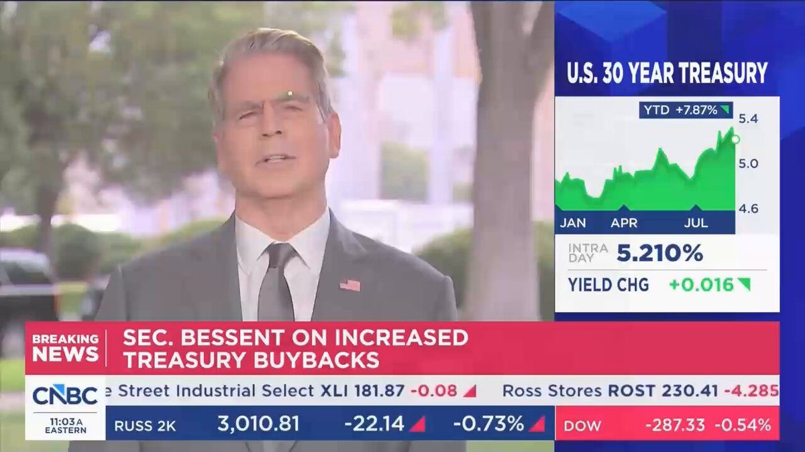

THE BLOCK: Rain CEO Farooq Malik said more than 100,000 merchants are accepting stablecoin payments without knowing it.
He said those transactions currently settle through Visa and outlined plans to let merchants opt for stablecoin settlement instead of waiting three days.
Scott Bessent: "There's nothing magic about the $40 trillion number."
"We can grow our way out of that"

▶ Watch on XPretty funny how when Elon left DOGE he was like “the deep state won’t let us cut the deficit so the only way out is to grow the economy with AI and shit”, everyone was like what a stupid copout and since then the DOW has ripped +10780 (25%)
BREAKING: AI is delivering the largest capex-driven boost to GDP in history, per Bloomberg.
China has unveiled the world's first standing-position manned flying vehicle, featuring a flat, flower-shaped platform roughly 3.5 meters across, an enclosed-propeller propulsion system, and a central standing area that can accommodate pilots weighing up to 90 kg. Equipped with a dual-redundant flight control architecture and triple-redundant inertial measurement units, the eVTOL aircraft offers a flight time of up to 11 minutes with a 70-kg pilot on board.
Today @POTUS signed a new National Space Transportation Policy, one that meets this moment of explosive growth and positions America to lead the next era of space.
In the 13 years since the last update to the Policy, U.S. launches have surged 10x: from 19 successful orbital launches in 2013 to 178 in 2025. This policy builds on that momentum to enable 1,000 launches and reentries on American soil by 2030.
Most of our launch infrastructure dates back to the 1960s. This Policy catalyzes commercial co-investment to build next-generation launch and reentry sites and designates an additional federal land reentry site to bring operations home.
It expands space transportation to include reentry and in-space operations. This unlocks reverse logistics and new orbital markets. The policy also delivers priority airspace corridors, transparent range allocation, a commercial-first approach enabling Americans on the Moon by 2028 and initial Moon Base elements by 2030, and rapid, resilient launch capabilities for national security.
This is how America leads.🚀🇺🇸
https://www.whitehouse.gov/fact-sheets/2026/08/fact-sheet-president-donald-j-trump-launches-the-golden-age-of-space-transportation/
@nikitabier @DrewPavlou So many breakthroughs are coming
"THE MOST CRUSHING ECONOMIC OPERATION EVER TAKEN AGAINST ANY COUNTRY!" - President Donald J. Trump
‘ECONOMIC D-DAY’: President Trump Announces Unprecedented Operation To Crush Iran’s Shadow Economy
.@StephenM: "It's one of the most vile things I've ever seen — @GovTimWalz trying to free and protect an illegal alien pedophile in order to maintain his status as a sanctuary for criminals. Truly beneath contempt."
Under @POTUS, the days of illegal aliens collecting taxpayer-funded benefits are over. The federal law is clear, and @USTreasury is enforcing it. American taxpayers should not be forced to foot the bill for benefits going to those who are barred by law from receiving them. These proposed regulations end the abuse, protect the integrity of the tax system, and put Americans first.
LATEST: 🇺🇸 White House crypto adviser Patrick Witt told Coinage that if the CLARITY Act fails, federal agencies are "locked and loaded, ready to go" with crypto rulemaking.
BREAKING: Franklin Templeton receives U.S. regulatory clearance to bring tokenized assets into traditional investment funds.
Thanks to the brilliant work of @FBIAlbany and our partners - this FBI stopped yet another alleged terrorist attack.
Last night the FBI arrested an individual - Jessica Bowie - who allegedly swore allegiance to ISIS and planned to carry out a deadly attack with explosives on the New York State Capitol.
In her own words, as alleged in the complaint - Bowie wanted to “destroy as much of the building as possible” and “kill the Senators while they are meeting.”
The alleged plans were in advanced stages to where the subject had conducted surveillance at the state Capitol at least 5 times and purchased materials to make an explosive device.
She has been charged with attempting to provide material support or resources to a designated foreign terrorist organization.
I want to thank our incredible agents, Intel teams, federal and regional partners, and our Justice Department who executed and likely saved many lives.
This FBI is now built to act quickly with more precision than we ever have before. We have thousands of more personnel in the field, a rebuilt DSIC coordination hub to share intelligence, stronger partnerships with local law enforcement than in history, and more counterintelligence partnerships around the world than ever to find threats wherever they try to hide. This is just the latest example of this FBI stopping an alleged terrorist in their tracks - in 2026 we’ve already disrupted 400+ such attacks at home and around the world. For any individual who may be considering harming Americans in the future: know that we will find you. https://x.com/FoxNews/status/2090505158979416538/video/1
Trump: You know, grass has a life like humans have a life. This has all been redone, it's all topsoiled. Lot of good ingredients. If you're grass, you're very happy. It was given, free of charge, by Scotts Miracle-Gro. They actually contributed to my campaign. So I wanna thank Scotts Miracle-Gro. https://x.com/HQNewsNow/status/2090097557309469109/video/1
JUST IN: U.S. Education Department orders schools to stop altering student discipline policies to reduce racial disparities.